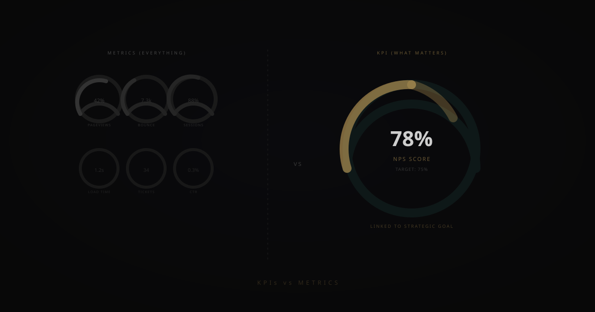
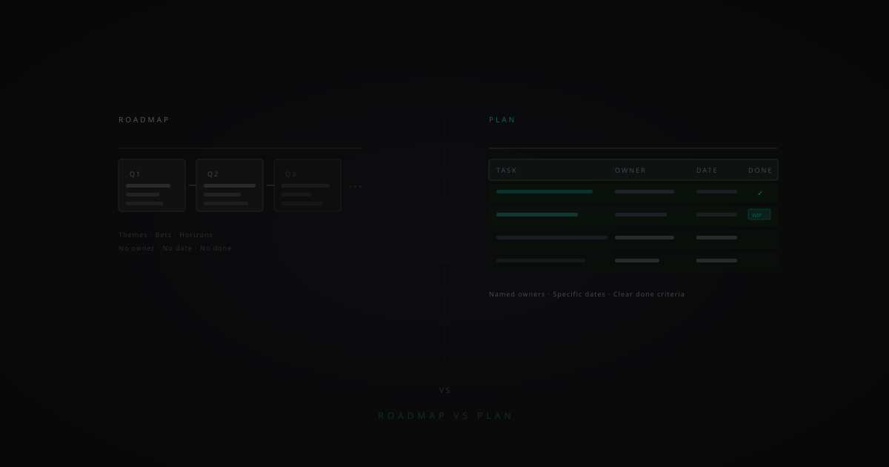
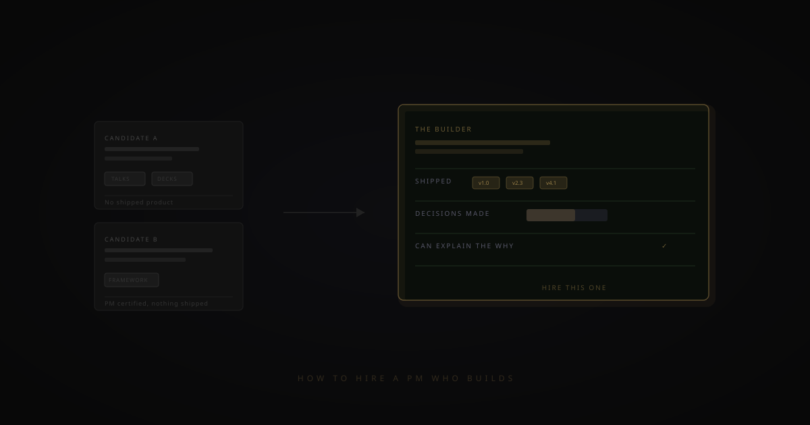
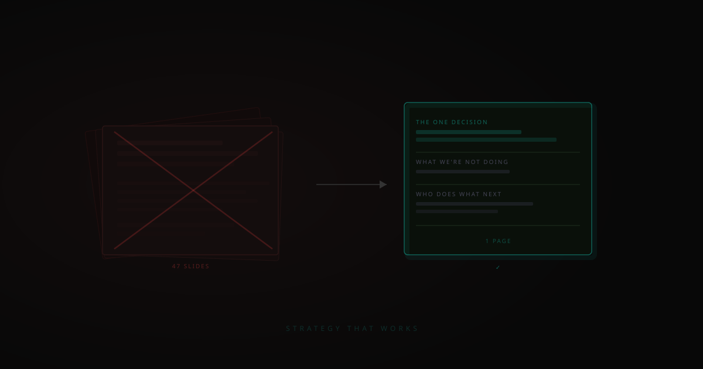
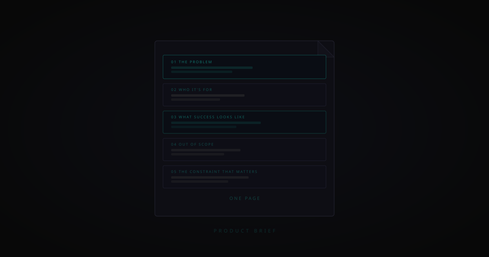
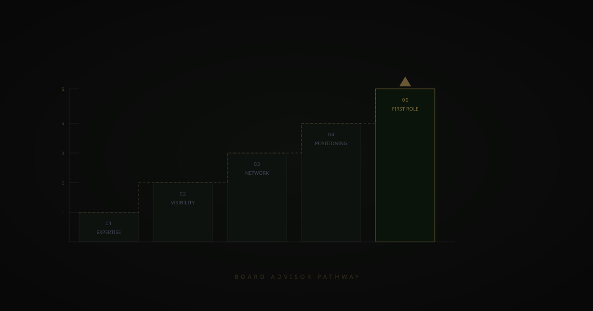

OKRs without the bureaucracy
OKRs work. The way most companies implement them doesn't. Here's how to get the focus and alignment without the overhead.

What data governance actually means in practice
Data governance has a reputation as compliance theatre. Done properly, it's the operating system for making data reliable and usable at scale.

Do you need a Chief AI Officer?
The CAIO title is spreading fast. But creating the role doesn't solve the problem — it relocates it. Here's how to think about it.

The technology handover problem
Most technology projects are built by one team and handed to another. Most of them fail in that gap. Here's how to close it.

The first 90 days as a non-executive director
The most common mistake new NEDs make is contributing too quickly. Here's how to use the first 90 days to earn the right to have impact.

What an AI-ready board actually looks like
Most boards aren't equipped to govern AI effectively. Here's what AI fluency means at board level and how to build it.

KPIs vs metrics — why the distinction matters more than you think
Most teams measure everything and act on nothing. Here's how to tell a KPI from a metric — and why getting it right changes everything.

How to build an AI business case that gets approved
Most AI business cases get rejected not because the idea is bad but because the case is framed wrong. Here's how to frame it right.

How to run a board meeting that actually matters
Most board meetings are status updates with governance theatre. Here's how to structure one where the right decisions actually get made.

What digital-first operations actually means
Digital-first isn't about having more software. It's about designing processes where the digital layer drives the outcome — not just records it.

Why most companies automate the wrong things first
The visible, easy processes get automated. The high-value decisions stay manual. Here's how to find what's actually worth automating.

The difference between a roadmap and a plan
Most teams have one and call it the other. Here's the difference — and why confusing them creates a very specific kind of chaos.

How to hire a product manager who actually builds
Most PM hiring processes select for people who present well, not people who ship. Here's how to tell the difference.

What I learned from 20 years of bad strategy decks
The same sins keep appearing. Here's what bad strategy looks like — and what good strategy looks like instead.

Why your CTO and CMO don't speak the same language
The translation gap between technology and commercial leadership is where roadmaps stall and AI projects die in committee.

The ops stack every digital business needs — and most don't have
Most digital businesses have 15 disconnected tools and call it an ops stack. Here's what a real connected stack looks like.

What makes a great product brief — and why most teams skip it
A product brief isn't a spec doc. It's a contract between what the business needs and what the team is about to build.

How to think about AI ROI — and why most frameworks get it wrong
Most AI ROI frameworks measure the wrong things. Here's a better way to think about value that actually holds up inside a business.

What agentic AI means for business leaders
Agentic AI doesn't just answer questions — it takes actions, runs sequences, and operates autonomously. Here's what leaders need to understand.

What boards need to know about shadow AI right now
Shadow AI is already inside your organisation. Here's what boards need to understand about the risk, and what a proportionate response looks like.
Why digital transformation fails — and what actually works
Most digital transformations fail not because of technology but because of three leadership failures that appear across almost every case.

Digitisation vs digitalisation: why the difference matters more than you think
Confusing these two terms leads to the wrong investments. Here's a clear, practical breakdown — and how to use both effectively.

What is a fractional leader — and does your business need one?
Fractional leadership is one of the most useful tools available to growing businesses. Here's what it actually means and when it makes sense.

What is a Non-Executive Director — and does your business need one?
NEDs sit on boards without running the business. But the right one adds far more than governance. Here's a clear guide to the role.

What is AI fluency — and why every executive needs it in 2026
AI fluency isn't about writing code. It's the ability to evaluate AI claims, ask the right questions, and lead teams through AI-enabled change.

How to land your first board or advisor role — a practical guide
Most board roles are never advertised. Here's how experienced operators actually navigate the transition — and position themselves to be found.

Board advisor vs Non-Executive Director: what's the actual difference?
The differences in legal responsibility, time commitment, and compensation are significant enough to matter — whether you're hiring or pursuing the role yourself.
What is a digital strategy — and why most companies don't actually have one
Most organisations think they have a digital strategy. What they actually have is a list of technology projects.